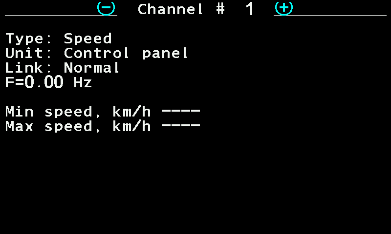

Setting up
The sensor status screen
How to read the status screen of a sensor — channel, address, type, link state, live figures and active alarms — what each kind of sensor shows on it, and how to move through it by touch.
Reached through “Information” in the context menu of a device (Sensor settings). It shows what the panel knows about one device.
The screen

- “Channel #” — which device of the whole list this is.
- The marks either side of the channel number. Swipe left for the previous device, right for the next one. The screen stays open.
- “Address:” — the address the device answers on. Not given in this manual.
- “Type:” — the kind of device and its number, here hopper sensor 1.
- “Link:” — the state of the communication. Table below.
- The figures of this kind of device — here the level on the input of a hopper sensor. Table below.
- “Alarm 1 from 1” — how many alarms of this device are active.
- The name of the alarm — the first of the active alarms.
Some devices show one more line, “Unit:” — the unit the device is connected to, for example “Control panel” for the travel speed sensor.
| Gesture | What it does |
|---|---|
| Swipe right / left | Next / previous device — the screen stays open. |
| Swipe up, or three-finger tap | Back to where you came from. |
Link states
| State | Meaning |
|---|---|
| “Normal” | The device answers. |
| “Not controlled” | The device is out of control: neither the communication nor anything else is watched. |
| “No connection” | The device does not answer. Red. |
| “Wrong device type!” | Something answers, but not the kind of device the profile expects. Red. |
| “IMITATION” | Speed sensor only: the speed is simulated, not measured. Yellow. |
The figures are drawn only while the device is under control, answers, and is of the expected kind. A device out of control shows its identity and nothing else.
What each kind of sensor adds

| Device | What the screen shows |
|---|---|
| Speed sensor | The pulse frequency F= in Hz; with two speed sensors F1= and F2=. Under it the two limits “Min speed, km/h” and “Max speed, km/h”. On a machine that doses a product by weight with electric motors, the limits are those the motors can hold, narrowed by the two settings; a limit the settings cannot meet is written in red as an inequality. Without such motors a limit set to zero is shown as ----, switched off. |
| Hopper sensor | Pin: and the level on the input, "0" or "1". |
| Dispenser shaft sensor | F= in Hz, to three decimals. |
| Fan sensor | F= in Hz. |
| Pressure sensor | P= in kPa. |
| Seed sensor, dry fertilizer sensor | Status: and one of eight states — below. |
| Liquid fertilizer flow sensor | Status: Working, or Working:Tramline in the tramline mode; under it Flow= in L/min. |
| Work position sensor | “Position: Working” or “Position: Transporting”, and Pin: with the level on the input. |
| Ignition, oil pressure, battery charge, fuel level, air filter | Pin: and the level on the input, "0" or "1". |
| Marker sensor | Only the common lines. |
| Tramline actuator | Status: Pulled in, Pulled out, Working while the shutter moves, or Unknown. |
| Dispenser electric motor | Status: Working, or Faulty while any alarm of the motor is active; then “Last fault:” with the controller's code, if there has been one (codes). A universal controller adds IN1[ ] IN2[ ] IN3[ ] with the levels on its three inputs. |
| Liquid fertilizer pump controller | Status: Working or Faulty. With a fault, “Last fault:” and the code. Without one: Flow= in L/min, Load= in per cent, and Pressure sensor: No if there is none, otherwise Pressure sensor= in Bar with the raw signal in mA in brackets. Dashes stand for a value the controller cannot give. |
The eight states of a seed or fertilizer sensor
| Status | Meaning |
|---|---|
| Working | Normal. |
| Working:Tramline | Normal; the sensor is in the tramline control mode for the current bout, or its product application is switched off. |
| Configuring | The sensor has received new settings and is applying them. |
| Calibration in progress | The sensor runs its initial calibration. It takes a few seconds. |
| Clogged | The optical channel is blocked — most likely a blocked seed tube. Red. |
| Light struck | Too much light falls into the optical channel; the sensor may miscount. Red. |
| Faulty | The sensor reports a fault of its own. Red. |
| Unknown | Another fault that cannot be identified. Red. |
Something your machine does that this page does not answer? Write to support@agriwelt.com — an engineer answers.